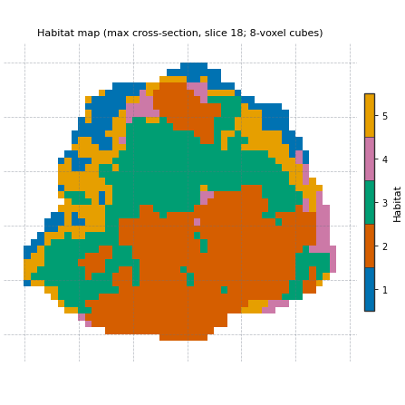
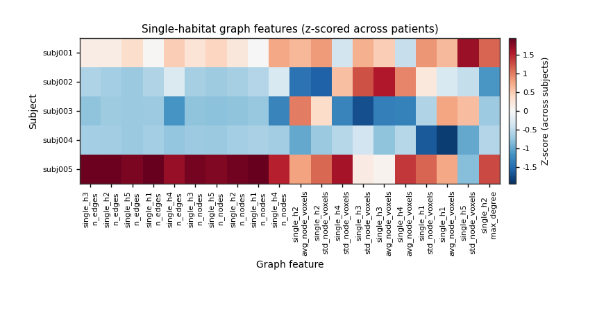

备注
转到文末 可下载完整示例代码。
生境 graph network 特征#
背景。 体积分数说明肿瘤各生境占比，不说明空间排布。同一 30 % 生境可以是紧凑块或散布小岛。HABIT 图族将生境图转为网络并用标准网络统计度量排布。
目的。 在两名演示患者上拟合批准的两步法分析，用已保存定义为五名演示患者贴标签，打印图指标简表并附每列一行含义，在一层切片上绘制 lattice 与网络，并观察换节点/边构建方式时数字如何变化。
何时使用。 问题关于空间组织——碎片化 vs 紧凑生境、交错 vs 并列——而非仅各生境占比。
关键术语。 完整定义见 概念 。
node（默认 ``node_method="uniform_grid"`` ） — 肿瘤包围盒切成边长
block_size=8体素的立方体。仅当立方体 >20 % 在肿瘤内（block_min_coverage=0.2）才保留。每个保留立方体内，同一生境的每个连通片成为一个节点，位于该片质心。含两种生境的立方体因此至少两个节点。边（默认， ``edge_method="min_distance"`` ） —— 当两节点最近体素至多相距
distance_threshold=5个体素时相连。单位是体素，不是毫米。隔着立方体面相触的碎片会相连；中间隔着一整块空立方体的两块碎片约相距 8 个体素，则不相连。单生境图（ ``single_h<i>_*`` 列） — 仅生境
i的节点及其间边。描述该生境如何连成一体。成对图（ ``pair_h<i>_h<j>_*`` 列） —— 同时包含生境
i与j的节点。跨生境边描述这两种生境如何接触与交错。extended metrics（ ``include_extended_metrics`` ） — 每图额外列：全局/局部效率、小世界系数、rich-club 系数及 betweenness/度/local-efficiency 分布摘要。
分析定义。 本页用已批准两步法（四 DCE 期、受试者级 winsorize + z-score、30 k-means 超体素、pool、10-bin 队列分箱、k-means 2..10 生境 elbow、最近质心分配），graph 扩展指标关闭。末尾比较只变一因子：节点与边如何构建（ node_method="component" 与 edge_method="adjacency" ）。
备注
生境定义在两名患者上拟合，再应用到另外三名。这是在 5 受试者演示队列上展示机制，并非一项研究。图指标在完整 3-D 生境图上计算；网络图仅为显示而展示一个 2-D 切片。
将 DATA / MODALITIES / ROI 改为您的预处理树。
加载队列#
前两名演示患者定义生境；五名均有图行。演示包首次下载后缓存。sphinx_gallery_thumbnail_number = 2
import time
from pathlib import Path
import matplotlib.pyplot as plt
import pandas as pd
from habit.contracts import cohort_from_directory
from habit.datasets import fetch_demo
from habit.habitat_features import GraphHabitatFeatures
from habit.execution import backend_from_policy
from habit.recipes import Study
from habit.spec import HabitatSpec, Spec, Stage
from habit.spec.policy import RunPolicy
from habit.viz import (
plot_graph_feature_heatmap,
plot_habitat_graph_network_2d,
plot_habitat_graph_slice,
)
# Change DATA / MODALITIES / ROI to your preprocessed layout.
DATA = fetch_demo()
MODALITIES = ("pre_contrast", "LAP", "PVP", "delay_3min")
ROI = "LAP"
cohort = cohort_from_directory(DATA, modalities=MODALITIES, roi=ROI)
train = cohort[:2]
Path("out").mkdir(exist_ok=True)
print(cohort)
HABIT demo data (cached)
DATA (preprocessed root): C:\Users\dongm\.habit_data\demo-data-v1\preprocessed
On-disk inventory of this folder:
subjects (5): subj001, subj002, subj003, subj004, subj005
image series: LAP, PVP, delay_3min, pre_contrast
mask keys: LAP, PVP, delay_3min, pre_contrast
example image: images/subj001/delay_3min/WATER__BH_Ax_LAVA_Flex_3min_Series0012.nrrd
example mask: masks/subj001/delay_3min/WATER__BH_Ax_LAVA_Flex_10min_Series0017_mask.nrrd
Your own data must use the same folder tree (change IDs / series names):
DATA/
images/<subject_id>/<modality>/<one image file>
masks/<subject_id>/<roi>/<one mask file>
Then load it with the same call the demos use:
cohort = cohort_from_directory(DATA, modalities=("LAP",), roi="LAP")
Swap DATA / modalities / roi to match your tree. Mask key is often the
same as one image series (here LAP).
Cohort(5 subjects [subj001, subj002, subj003, subj004, subj005])
适合栖息地并标记每位患者#
批准的定义。 graph 阶段为最后 quantify 阶段；其参数为 GraphHabitatFeatures 构造参数。未列出的项保持库默认（均匀网格节点、8 体素立方、5 内最近体素边）。
spec = HabitatSpec(
name="graph_network_two_step",
stages=(
# One intensity column per DCE phase, voxels inside the ROI.
Stage("extract", Spec("raw", {"modalities": list(MODALITIES), "roi": ROI})),
# Subject-level: clip each column to the patient's own 1st..99th percentile.
Stage("preprocess", Spec("winsorize", {"winsor_limits": [0.01, 0.01]})),
# Subject-level: rescale each column to 0..1 with the patient's own range.
Stage("preprocess2", Spec("zscore")),
# 30 supervoxels per tumour; these rows are what the cohort model clusters.
Stage("partition", Spec("kmeans", {"n_supervoxels": 30})),
Stage("pool", Spec("pool")),
# Cohort-level: bin edges learned on the pooled training supervoxels,
# stored inside the model and reused for new patients.
Stage(
"fit",
Spec(
"kmeans",
{"min_habitats": 2, "max_habitats": 10, "validation": "elbow", "n_init": 10},
),
),
Stage("assign", Spec("nearest_centroid")),
Stage("volume", Spec("volume")),
Stage("msi", Spec("msi")),
Stage("ith", Spec("ith_score")),
# Extended metrics off: the short default table. The constructor
# default of GraphHabitatFeatures is include_extended_metrics=True.
Stage("graph", Spec("graph", {"include_extended_metrics": False})),
),
random_seed=0,
)
result = Study(spec).fit_predict(
train,
backend=backend_from_policy(
RunPolicy(backend="serial", on_subject_failure="continue")
),
)
print(result.habitat_model.summary())
Cohort.map[_ComputeUnits]: 0%| | 0/2 [00:00<?, ?it/s]
Cohort.map[_ComputeUnits]: 50%|█████ | 1/2 [00:03<00:03, 3.86s/it]
Cohort.map[_ComputeUnits]: 100%|██████████| 2/2 [00:05<00:00, 2.77s/it]
Cohort.map[_ComputeUnits]: 100%|██████████| 2/2 [00:05<00:00, 2.77s/it]
Cohort.map[_AssignPrecomputedUnits]: 0%| | 0/2 [00:00<?, ?it/s]
Cohort.map[_AssignPrecomputedUnits]: 50%|█████ | 1/2 [00:01<00:01, 1.08s/it]
Cohort.map[_AssignPrecomputedUnits]: 100%|██████████| 2/2 [00:01<00:00, 1.04it/s]
Cohort.map[_AssignPrecomputedUnits]: 100%|██████████| 2/2 [00:01<00:00, 1.04it/s]
HabitatModel kmeans-3432f3b65bfec11a
habitats : 5
features (4) : pre_contrast, LAP, PVP, delay_3min
defining cohort : n=2
modalities : pre_contrast, LAP, PVP, delay_3min
cohort digest : cc1b16a34cc7478d...
produced by : habitat_model_fitter.kmeans
habit version : 3.0.0
random seed : 0
preprocessing state: inertia, selection_report, validation
肘部 / Kneedle 注意事项和标准表#
HABIT 验证中的 elbow 与 kneedle 是同一规则。它对 k-means 惯性（簇内平方和）运行 KneeLocator ，曲线凸、方向递减（Satopaa, Albrecht, Irwin, and Raghavan, 2011, Finding a "Kneedle" in a Haystack, IEEE ICDCS）。将 k 与惯性归一化到单位正方形，画出首末点弦线，取离该弦最远的 k；光滑曲线上该拐点常落在肉眼所见弯折的右侧。文献中的 "elbow" 指观察簇内离散度随 k 的变化（Thorndike RL, 1953, Who belongs in the family?, Psychometrika 18(4):267-276）——并非二阶差分公式。离散曲率肘部（视觉肘部、计算得到）最大化惯性的二阶差分（HABIT pre-v1.0 elbow）。生境图保留 Kneedle 的 K。
_report = result.habitat_model.preprocessing_state["selection_report"]
_candidates = [int(k) for k in _report["candidates"]]
_inertia = __import__("numpy").asarray(_report["scores"][_report["methods"][0]], dtype=float)
def _discrete_curvature_elbow_k(cluster_range, inertia_scores):
"""Return k maximizing the second difference of inertia (pre-v1.0 elbow)."""
import numpy as np
values = np.asarray(inertia_scores, dtype=float)
cluster_range = [int(k) for k in cluster_range]
if values.size < 3:
return int(cluster_range[int(np.argmin(values))])
return int(cluster_range[int(np.argmax(np.diff(values, n=2))) + 1])
_k_kneedle = int(result.habitat_model.n_habitats)
_k_discrete = _discrete_curvature_elbow_k(_candidates, _inertia)
from habit.habitat_model import KMeansHabitatModelFitter as _KMeansFitter
_k_table = {"elbow_kneedle": _k_kneedle, "discrete_curvature_elbow": _k_discrete}
for _name in ("silhouette", "calinski_harabasz", "davies_bouldin"):
_fitter = _KMeansFitter(
min_habitats=2, max_habitats=10, validation=_name, n_init=10
)
_fitter.set_random_state(0)
_k_table[_name] = _fitter.fit(result.units, cohort=train).n_habitats
print("K by criterion (elbow/kneedle=Kneedle; sil/CH maximize; DB minimize; skip gap):")
for _name, _k in _k_table.items():
print(f" {_name}: {_k}")
print(f"habitat map uses Kneedle K = {_k_kneedle}")
# The other three patients are labelled with the fitted definition
# (no refit). Passing ``spec=`` runs the same quantify stages on them.
prediction = Study.from_model(result.habitat_model, spec=spec).predict(cohort[2:])
# One row per patient, training rows first.
table = pd.concat(
[result.features.frame, prediction.features.frame], ignore_index=True
).set_index("subject")
habitat_maps = list(result.habitat_maps) + list(prediction.habitat_maps)
graph_columns = [c for c in table.columns if c.startswith(("single_h", "pair_h", "graph_"))]
print("habitat ids:", habitat_maps[0].habitat_ids)
print("graph columns:", len(graph_columns), "of", table.shape[1])
K by criterion (elbow/kneedle=Kneedle; sil/CH maximize; DB minimize; skip gap):
elbow_kneedle: 5
discrete_curvature_elbow: 3
silhouette: 2
calinski_harabasz: 2
davies_bouldin: 2
habitat map uses Kneedle K = 5
Cohort.map[_LabelAndDescribe]: 0%| | 0/3 [00:00<?, ?it/s]
Cohort.map[_LabelAndDescribe]: 33%|███▎ | 1/3 [00:02<00:04, 2.38s/it]
Cohort.map[_LabelAndDescribe]: 67%|██████▋ | 2/3 [00:05<00:02, 2.64s/it]
Cohort.map[_LabelAndDescribe]: 100%|██████████| 3/3 [00:14<00:00, 4.72s/it]
Cohort.map[_LabelAndDescribe]: 100%|██████████| 3/3 [00:14<00:00, 4.72s/it]
habitat ids: (1, 2, 3, 4, 5)
graph columns: 608 of 663
精选指标表#
图族写入数百列（每个生境与每对生境的每个指标，及以 _norm / _per_habitat_volume 结尾的规模归一化伴生列）。研究只选回答问题的少数列。下列十列在生境 1 与生境 1/2 对上示例该族；其他 id 与对亦有相同指标。
curated = {
"graph_num_nodes_total": "nodes of all habitats together",
"single_h1_n_nodes": "pieces of habitat 1 (one per connected piece per kept cube)",
"single_h1_avg_degree": "mean number of habitat-1 neighbours per habitat-1 node",
"single_h1_connected_components": "separate groups of linked habitat-1 nodes (1 = one network)",
"single_h1_largest_component_ratio": "share of habitat-1 nodes in the biggest group",
"single_h1_avg_clustering": "how often two neighbours of a node are also linked",
"single_h1_modularity": "how strongly the habitat-1 network splits into communities",
"pair_h1_h2_n_edges": "edges between a habitat-1 node and a habitat-2 node",
"pair_h1_h2_isolated_ratio_1": "share of habitat-1 nodes with no habitat-2 neighbour",
"pair_h1_h2_habitat_assortativity": "> 0: nodes link to their own habitat more than to the other",
}
meaning = pd.DataFrame({"column": list(curated), "meaning": list(curated.values())})
print(meaning.to_string(index=False))
print()
print(table[list(curated)].round(3).T.to_string())
column meaning
graph_num_nodes_total nodes of all habitats together
single_h1_n_nodes pieces of habitat 1 (one per connected piece per kept cube)
single_h1_avg_degree mean number of habitat-1 neighbours per habitat-1 node
single_h1_connected_components separate groups of linked habitat-1 nodes (1 = one network)
single_h1_largest_component_ratio share of habitat-1 nodes in the biggest group
single_h1_avg_clustering how often two neighbours of a node are also linked
single_h1_modularity how strongly the habitat-1 network splits into communities
pair_h1_h2_n_edges edges between a habitat-1 node and a habitat-2 node
pair_h1_h2_isolated_ratio_1 share of habitat-1 nodes with no habitat-2 neighbour
pair_h1_h2_habitat_assortativity > 0: nodes link to their own habitat more than to the other
subject subj001 subj002 subj003 subj004 subj005
graph_num_nodes_total 487.000 161.000 75.000 130.000 1045.000
single_h1_n_nodes 60.000 20.000 9.000 16.000 195.000
single_h1_avg_degree 6.667 4.600 3.778 3.375 6.923
single_h1_connected_components 3.000 1.000 1.000 2.000 3.000
single_h1_largest_component_ratio 0.950 1.000 1.000 0.812 0.974
single_h1_avg_clustering 0.573 0.750 0.600 0.527 0.616
single_h1_modularity 0.425 0.274 0.121 0.508 0.370
pair_h1_h2_n_edges 142.000 32.000 23.000 76.000 796.000
pair_h1_h2_isolated_ratio_1 0.200 0.300 0.222 0.188 0.123
pair_h1_h2_habitat_assortativity 0.617 0.606 0.479 0.128 0.410
一片上的晶格和网络#
plot_habitat_graph_slice 在生境标签上叠加 8 体素格子：每个虚线方格为一立方。网络图在该 2-D 层按相同节点/边规则重建图，仅用于展示：首行每生境一 panel（白点=节点，白线=生境内边），后续行每生境对一 panel（仅跨生境边）。其 n / e 为层内计数，非三维表。两函数取完整三维标签数组并选最大截面层。
subject_id = habitat_maps[0].subject_id
labels = habitat_maps[0].label_array
fig = plot_habitat_graph_slice(labels, block_size=8)
fig.savefig("out/graph_network_lattice.png", dpi=150, bbox_inches="tight")
plt.show()
fig = plot_habitat_graph_network_2d(labels, block_size=8)
if fig is not None:
fig.savefig("out/graph_network_network.png", dpi=150, bbox_inches="tight")
plt.show()


所有患者一览#
plot_graph_feature_heatmap 对行（此处五名演示患者）逐列 z-score，并在单生境指标中保留方差最大的 n_features 列。五名患者时这只是查看表格的方式，非统计结果。
fig = plot_graph_feature_heatmap(
table.reset_index(),
subject_col="subject",
feature_group="single",
n_features=20,
title="Single-habitat graph features (z-scored across patients)",
)
fig.savefig("out/graph_network_heatmap.png", dpi=150, bbox_inches="tight")
plt.show()

另一节点与边规则#
只改一个因素：节点变为生境的整块连通片段（ node_method="component" ；大于 subdivide_region_voxels=1000 个体素的片段仍会被切成 8 体素立方体），且仅当两个节点在至少 adjacency_min_voxels=10 对相邻体素上接触时才连边（ edge_method="adjacency" ，26 邻域）。生境图相同；不同的只是在其上构建的图。提取器与 graph 阶段所用组件相同，以 extractor(subject, habitat_map) 调用。
default_graph = GraphHabitatFeatures(include_extended_metrics=False)
component_graph = GraphHabitatFeatures(
node_method="component",
edge_method="adjacency",
include_extended_metrics=False,
)
compare_columns = ["graph_num_nodes_total", "single_h1_n_nodes", "single_h1_n_edges", "single_h1_avg_degree"]
rows = []
for subject, habitat_map in zip(cohort, habitat_maps):
default_row = default_graph(subject, habitat_map).frame.iloc[0]
component_row = component_graph(subject, habitat_map).frame.iloc[0]
row = {"subject": subject.subject_id}
for column in compare_columns:
row[f"{column} (grid)"] = float(default_row[column])
row[f"{column} (component)"] = float(component_row[column])
rows.append(row)
comparison = pd.DataFrame(rows).set_index("subject")
print(comparison.round(2).T.to_string())
# The stage default and the direct call must agree on the default rule.
same_as_stage = all(
float(comparison.loc[sid, "graph_num_nodes_total (grid)"]) == float(table.loc[sid, "graph_num_nodes_total"])
for sid in comparison.index
)
print("direct default call == graph stage:", same_as_stage)
subject subj001 subj002 subj003 subj004 subj005
graph_num_nodes_total (grid) 487.00 161.0 75.00 130.00 1045.00
graph_num_nodes_total (component) 219.00 49.0 29.00 43.00 418.00
single_h1_n_nodes (grid) 60.00 20.0 9.00 16.00 195.00
single_h1_n_nodes (component) 19.00 7.0 2.00 5.00 78.00
single_h1_n_edges (grid) 200.00 46.0 17.00 27.00 675.00
single_h1_n_edges (component) 9.00 0.0 0.00 0.00 60.00
single_h1_avg_degree (grid) 6.67 4.6 3.78 3.38 6.92
single_h1_avg_degree (component) 0.95 0.0 0.00 0.00 1.54
direct default call == graph stage: True
扩展指标新增内容#
include_extended_metrics=True （构造函数默认）为每个单图与对图增加全局/局部效率、小世界系数（默认 Humphries 解析 Erdos-Renyi 比较， graph_null_sampler="analytic" ）、相对一个 configuration-model 随机图的 rich-club 系数，以及 betweenness / 度偏度 / 节点局部效率摘要。在各图最大连通片上计算；小世界仅报告至少 extended_min_nodes=10 节点图（否则 0）。额外全对路径与逐节点邻域计算更慢； graph_null_sampler="config" 或 "rewire" 以 100 图保度 ensemble 替换小世界列且更慢。下述计时为本页构建机器上小患者一次。扩展调用计时两次：Python 进程首次调用亦付一次性 setup。
subject, habitat_map = cohort[1], habitat_maps[1]
extended_graph = GraphHabitatFeatures(include_extended_metrics=True)
start = time.perf_counter()
short_row = default_graph(subject, habitat_map).frame
short_seconds = time.perf_counter() - start
extended_seconds = []
for _ in range(2):
start = time.perf_counter()
extended_row = extended_graph(subject, habitat_map).frame
extended_seconds.append(time.perf_counter() - start)
added = sorted(set(extended_row.columns) - set(short_row.columns))
print(f"{subject.subject_id}: {short_row.shape[1]} columns in {short_seconds:.2f} s without extended metrics")
print(f"{subject.subject_id}: {extended_row.shape[1]} columns with extended metrics, "
f"first call {extended_seconds[0]:.2f} s, repeat call {extended_seconds[1]:.2f} s")
print("added for habitat 1:", [c for c in added if c.startswith("single_h1_")])
subj002: 609 columns in 0.21 s without extended metrics
subj002: 824 columns with extended metrics, first call 0.53 s, repeat call 0.44 s
added for habitat 1: ['single_h1_betweenness_max', 'single_h1_betweenness_max_norm', 'single_h1_betweenness_std', 'single_h1_betweenness_std_norm', 'single_h1_degree_skewness', 'single_h1_global_efficiency', 'single_h1_local_efficiency', 'single_h1_node_local_efficiency_min', 'single_h1_node_local_efficiency_std', 'single_h1_rich_club_coefficient', 'single_h1_small_world_sigma']
如何解读结果#
本页测量（subj001 + subj002 elbow 得 K = 4；生境 id 1..4）：
图规模随肿瘤大小变化：subj001..subj005 的
graph_num_nodes_total分别为 481、135、105、124 与 779（ROI 体素数 34694、9858、6156、5840 与 80084）。仅在相似大小的肿瘤之间比较原始计数，或使用*_norm/*_per_habitat_volume配套列。生境 1 在 subj002、subj003、subj004 形成单一连通网络（
single_h1_connected_components= 1），在 subj001、subj005 为两组，最大组约 99% 节点。pair_h1_h2_habitat_assortativity近零（约 -0.03 至 0.07）：本图中生境 1 与 2 节点互连频率几乎与各自生境内相当。component / adjacency 规则在同一图上构建远更少节点与边（subj001：185 而非 481 节点，52 而非 737 条生境-1 边）。两规则是不同图定义：勿在同一分析中混用其列，并报告所用规则（规则存于阶段
Spec与运行清单）。扩展指标新增 140 列（四生境时 412 → 552）。
这是五名演示患者；数字展示列含义，非与任何临床结局的关系。
接下来去哪里#
逐步讲解图特征族，含一步法生境图与标签匹配： 生境 graph network 特征 。
其他生境特征族一表汇总： 含 volume、MSI、ITH 的生境放射组学 。
此处使用的分析定义： 用 Spec 的两步法生境 。
导出表格和方法文本： 导出结果并起草方法段落 。
脚本总运行时间： (0 minutes 31.201 seconds)